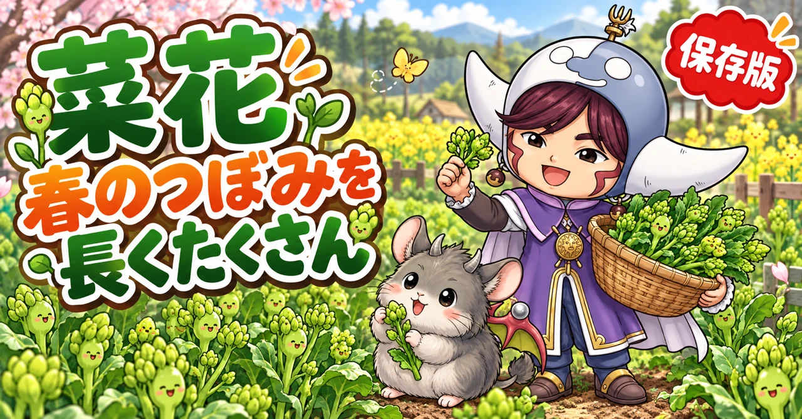
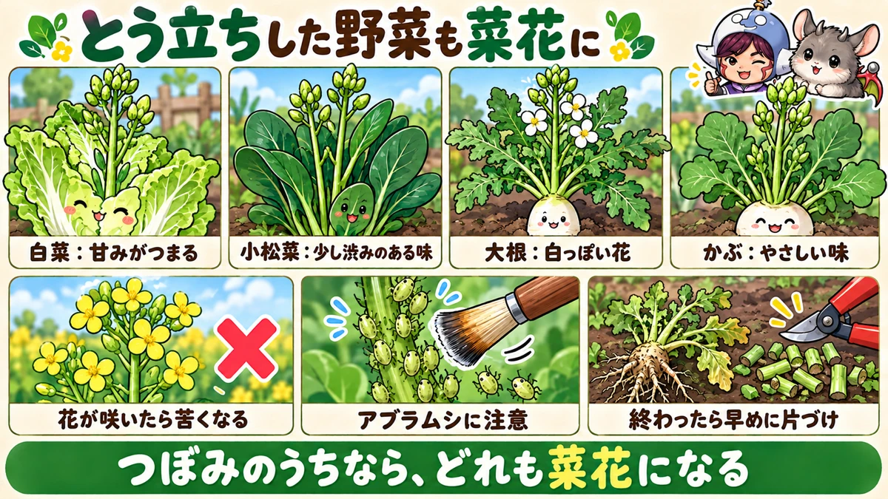

菜花（なばな）の決定版｜食用の菜の花・のらぼう菜・とう立ちした白菜や小松菜まで、春のつぼみを長くたくさんとる摘心と追肥

📖 この記事の目次
この記事で分かること
- 菜花（なばな）は、アブラナ科の野菜の、花が咲く前のつぼみと、やわらかい茎と葉を食べるものです。
- 食用の菜の花やのらぼう菜は、秋にタネをまいて冬を越させ、春に伸びてくるつぼみを摘みとって食べます。
- 真ん中の茎が30cmほどに伸びたら、先を摘みとります（摘心）。そうすると、葉のつけ根からわき芽がたくさん出て、たくさん収穫できます。
- つぼみのうちに、茎の先15〜20cmほどを摘みとるのがおいしいとりどきです。花が咲くと、苦みが出て味が落ちます。
- 白菜、小松菜、大根、かぶなど、ほかのアブラナ科の野菜も、春にとうが立つと、つぼみを菜花として食べられます。
春、畑のあちこちで、アブラナ科の野菜が茎を伸ばし、黄色いつぼみをつけはじめます。冬のあいだ、じっと寒さに耐えていた株が、いっせいに動きだす季節です。このつぼみを摘みとって食べるのが、菜花です。ゆでると、ほろ苦さと甘みが口に広がり、春が来たことを感じさせてくれます。
菜花は、秋にタネをまいておけば、あとはほとんど手間がかからず、春にたくさん収穫できる、家庭菜園向きの野菜です。この記事では、菜花の種類から、タネまき、冬越し、春の摘心と追肥、収穫、終わったあとの片づけまで、順番に書いていきます。
この記事の読み方
これから菜花を育てたい人は、「早見」と「タネまきと冬越し」から読んでください。いま春を迎えて、たくさん収穫したい人は、「春のお世話」と「収穫」が役に立ちます。とう立ちした白菜や小松菜をどうしようか迷っている人は、「とう立ちした野菜を菜花として楽しむ」へ進んでください。
早見：菜花
- なかま：アブラナ科
- 食べるところ：花が咲く前のつぼみと、やわらかい茎と葉
- 主な種類：食用の菜の花、のらぼう菜、茎ブロッコリー、ブロッコリーとケールをかけあわせた品種など
- タネまき：秋（品種による。のらぼう菜は9月下旬ごろが目安）
- 収穫：春（品種によっては冬から）。つぼみのうちに、茎の先15〜20cmほど
- 摘心：真ん中の茎が30cmほどに伸びたら、先を摘む
- 追肥：収穫が始まったら、1か月に1回ほど
- 注意：アブラムシがつきやすい

菜花を知る
つぼみを食べる野菜
菜花は、アブラナ科の野菜が花を咲かせる前の、つぼみと、そのまわりのやわらかい茎、葉を食べるものです。ブロッコリーも、つぼみを食べる野菜ですが、ブロッコリーは大きなつぼみのかたまりを作るのに対して、菜花は、細い茎の先についた小さなつぼみを、次々に摘んで食べます。
食用の菜の花
昔から食べられてきた、食用の菜の花です。茎ブロッコリーやのらぼう菜に比べると、少しピリッとした辛みや、渋み、苦みがあるのが、本来の菜の花の味です。秋にタネをまくと、2月ごろから花が咲きはじめます。つぼみのうちに収穫でき、摘み残したつぼみは春に黄色い花を咲かせて、畑を明るくしてくれます。タネをまいたあとは、ほとんど手間がかからず、大きな株に育って、たくさんのつぼみを収穫できます。
のらぼう菜
のらぼう菜は、春にたくさん収穫できる菜花として知られ、人気が高まっている野菜です。アブラナと、キャベツのなかまがまじりあってできた、西洋系の菜花の一種とされます。江戸時代には、東京の西多摩地方を中心に育てられていたと言われます。
のらぼう菜のよいところは、くせがなく、春に伸びてくる茎（とう）が甘いことです。おひたし、あえもの、みそ汁、炒めものなど、どんな料理にも合います。寒さに強く育てやすく、春に伸びてきたとうを摘みとるだけなので、家庭菜園にぴったりです。
また、のらぼう菜は、自分の花粉で受粉する性質があり、ほかのアブラナ科の野菜とまじりにくいので、タネをとって、次の年にまくこともできます。
ブロッコリーとケールをかけあわせた菜花
ブロッコリーとケールをかけあわせた品種もあります。見た目は小さなブロッコリーのようですが、菜花のなかまとして扱われ、つぼみ、茎、葉をいっしょに摘みとって食べます。9月に植えると、11月ごろから収穫が始まり、春まで長く収穫が続きます。ブロッコリーのような甘みがあり、葉も炒めるとおいしく食べられます。
茎ブロッコリー
茎ブロッコリーも、わき芽のつぼみと茎を次々に摘む点で、菜花と似た楽しみ方ができる野菜です。春になると、次々にわき芽が出て、収穫の最盛期を迎えます。
種類の選び方
- 春の菜の花らしい、ほろ苦い味を楽しみたい：食用の菜の花
- くせがなく甘い菜花を、春にたくさんとりたい：のらぼう菜
- 冬のうちから長く収穫したい：ブロッコリーとケールをかけあわせた品種、茎ブロッコリー
- 黄色い花も楽しみたい：食用の菜の花。摘み残したつぼみが春に咲く
- タネをとって、次の年もまきたい：のらぼう菜（ほかのなかまとまじりにくい）
1種類に決めきれないときは、いくつかを少しずつ育てて、食べくらべるのも楽しいものです。
タネまきと冬越し
タネまきの時期
菜花のタネまきは、秋に行います。のらぼう菜は、9月下旬ごろがタネまきの目安です。食用の菜の花は、10月ごろに植えると、2月ごろから花が咲きはじめます。品種によってちがうので、タネの袋に書かれた時期を守ります。
土づくり
アブラナ科の野菜なので、キャベツや白菜、小松菜などと同じ土づくりで育ちます。植える2週間ほど前に石灰、堆肥、肥料を入れて耕しておきます。同じアブラナ科の野菜を続けて育てた場所は避けます。
タネまき、植えつけ
畑に直接タネをまくか、ポットで苗を作ってから植えつけます。株が大きく育つ品種が多いので、株と株のあいだは広めにとります。タネをまいたら、または苗を植えたら、防虫ネットをかけて、秋の虫から守ります。
冬はじっくり
冬のあいだ、菜花は葉を地面に広げるような姿で、寒さに耐えます。寒さに強いので、特別な手入れはほとんどいりません。ただ、寒い地域では、不織布をかけて霜や冷たい風から守ると安心です。冬のあいだに、鳥が葉を食べにくることがあるので、ネットをかけておきます。

茎ブロッコリーの冬のお世話
茎ブロッコリーは、秋に植えると、11月ごろから収穫が始まります。真ん中にできる最初のつぼみ（頂花蕾）を摘みとると、次々にわき芽が出てきて、それぞれの先に小さなつぼみをつけます。
- 最初のつぼみは、きれいなはさみで、茎を斜めに切って収穫する
- わき芽は、株のあちこちから出てくる。わき芽が10cmほどに伸びて、先に小さなつぼみがついたら切りとる
- 11月の中旬ごろになって虫が少なくなったら、防虫ネットを外して、のびのびと育てる
- 株が大きくなって傾いてきたら、支柱を立てて、ひもで結んで風に揺れないようにする
- 暖かい冬は、つぼみがすぐに花になってしまうので、早めに収穫する
- 追肥は、1か月に1回ほど続ける
2〜3週間に一度くらいのペースで収穫を続けていくと、春までしっかりとれます。
冬の鳥に注意
年が明けて、いちばん寒い時期になると、食べ物が少なくなった鳥が、畑のアブラナ科の野菜をねらってやってきます。特にブロッコリーのなかまは好まれ、葉をぼろぼろにされることがあります。ネットで囲うなどして守ります。畑のまわりの木に鳥がたくさんとまっているときは、早めに対策をします。
春のお世話
真ん中の茎を摘心する
春になって暖かくなると、株の真ん中から、太い茎が伸びてきます。この真ん中の茎が30cmほどに伸びたら、先を摘みとります（摘心）。摘みとった先は、最初の菜花として食べられます。
真ん中の茎の先を摘むと、葉のつけ根から、わき芽がたくさん出てきます。そのわき芽が伸びて、それぞれの先につぼみをつけるので、収穫できる菜花の数がぐんと増えます。摘心は、菜花をたくさん収穫するための、いちばんのポイントです。
摘心の手順
- 株の真ん中から伸びてきた太い茎の高さを見る。30cmほどになっていたら摘心の時期
- 茎の先の、つぼみのかたまりから15〜20cmほど下を、手で折るか、はさみで切る
- 摘みとった先は、最初の菜花として食べる
- しばらくすると、残った茎の葉のつけ根から、わき芽が伸びてくる
- わき芽の先につぼみがついたら、それを収穫していく
摘心したあとに追肥をしておくと、わき芽の伸びがよくなります。摘心は晴れた日に行うと、切り口が早く乾いて、病気が入りにくくなります。切り口から水が入らないよう、雨の前の日は避けておきます。
追肥が大事
次々にわき芽を伸ばして、つぼみをつけるには、たくさんの養分が必要です。収穫が始まったら、1か月に1回ほど、追肥をします。たとえば、鶏ふんを1株あたり30ccほど与える方法があります。
棒とじょうごで追肥する
株が大きく育って、株元に肥料をまきにくいときは、次のような方法もあります。
- 株の中心から25〜30cmほど離れたところに、細い棒を差しこむ
- 深さ12〜13cmほどまで差しこんだら、ぐるっと回して穴を広げる
- 棒を抜いて、じょうごを穴にさし、肥料を入れる
- 穴に水を注いで、肥料を溶かしこむ
- 土を埋め戻す
根のある深さに直接肥料を届けられるので、むだが少なく、効き目も早くなります。
アブラムシに注意
春の菜花には、アブラムシがとてもつきやすくなります。つぼみや茎の先に群がって、汁を吸います。こまめに見て、見つけたら早めに取りのぞきます。数が少ないうちに、指やテープ、やわらかいブラシで払い落とします。
アブラムシの手当て
アブラムシが少しついているときは、やわらかいブラシで払い落としてつぶすか、水で洗い流します。油と台所用洗剤を水に混ぜた液（油石けん水）を使う方法も知られていますが、農薬のきまりで、虫よけに使うことが認められていない資材です。アブラムシがびっしりついてしまった茎は、思いきって切りとって処分したほうが早いこともあります。収穫したつぼみは、よく洗ってから食べます。
見回りのチェック表
- 真ん中の茎は、30cmほどに伸びていないか（摘心の時期）
- つぼみがふくらんで、摘みどきの茎はないか
- 花が咲きかけている茎はないか（とり遅れ）
- 茎の先や、つぼみのまわりに、アブラムシがついていないか
- 前の追肥から1か月たっていないか
- 株が傾いていないか。支柱はいるか
- 鳥に葉を食べられていないか
収穫
つぼみのうちに
菜花は、つぼみがかたく閉じているうちに収穫するのが、いちばんおいしく食べられます。花が咲いてしまうと、苦みが出て、味が落ちます。
茎の先15〜20cmほどを摘む
収穫するときは、つぼみのついた茎の先から、15〜20cmほどのところで摘みとります。手で折ると、ぽきっと気持ちよく折れるところが、やわらかく食べられるところです。かたくて折れにくいところは、食べてもかたいので、その少し上で摘みます。
収穫の手順
- つぼみがかたく閉じている茎を選ぶ
- 茎の先から15〜20cmほどのところを持ち、軽く曲げてみる
- ぽきっと折れるところで折りとる。折れにくいときは、その少し上を、はさみで斜めに切る
- 摘んだ茎の下に、葉を2〜3枚残しておく。そこから次のわき芽が出る
- 収穫した菜花は、しおれやすいので、早めに水につけるか、冷やしておく
朝の涼しいうちに収穫すると、茎がみずみずしく、しおれにくくなります。昼の暑い時間にとった菜花は、すぐにしなっとしてしまいます。たくさんとれた日は、さっとゆでて小分けにしておくと、少しずつ使えて便利です。
摘むほど、次が出る
つぼみを摘むと、その下の葉のつけ根から、また新しいわき芽が出て、つぼみをつけます。こまめに摘むほど、次々に新しいつぼみが出てきて、長く収穫を楽しめます。
収穫の時期
品種や地域によってちがいますが、春の菜花は、3月の下旬から4月、5月にかけて収穫の最盛期を迎えます。ブロッコリーとケールをかけあわせた品種のように、11月ごろから収穫が始まるものもあります。

食用の菜の花の育て方
10月ごろにまけば、2月から咲く
食用の菜の花は、10月ごろにタネをまいたり苗を植えたりすると、冬を越して、2月ごろから花が咲きはじめ、春に満開になります。タネをまいたあとは、ほとんど手間がかからず、大きな株に育ちます。
つぼみと花、両方楽しむ
花が咲く前のつぼみを摘めば菜花として食べられ、摘み残したつぼみは、春いちばんに黄色い花を咲かせます。食べる分を摘みながら、畑の一角は花を咲かせておけば、春の景色も楽しめます。花が咲いたあとは、モンシロチョウなどの虫が集まりやすくなるので、花を楽しんだら早めに片づけます。
のらぼう菜の育て方
9月下旬にタネをまく
のらぼう菜は、9月下旬ごろにタネをまきます。ポットにまいて苗を作ってから植えつけるか、畑に直接まいて、育ちながら間引いていきます。秋の虫が多い時期なので、タネをまいたら、または植えつけたら、防虫ネットをかけておきます。
株間は広めに
のらぼう菜は、冬を越して春になると、大きな株に育ちます。株と株のあいだは広めにとって、春にわき芽がたくさん伸びても込み合わないようにします。
冬は寒さに耐えて、春を待つ
のらぼう菜はとても寒さに強く、冬のあいだは特別な手入れはほとんどいりません。葉を地面に広げて冬を越し、春になると、株の真ん中から太い茎（とう）を伸ばします。
春は、とうを摘むだけ
春に伸びてきたとうを、つぼみのうちに摘みとるだけで、次々にわき芽が伸びて、またとうが立ちます。摘むほどに次が出るので、春のあいだ、たくさん収穫できます。とうは甘みがあり、くせがないので、子どもでも食べやすい菜花です。
とう立ちした野菜を菜花として楽しむ
白菜、小松菜、大根のつぼみも食べられる
うまく玉が巻かなかった白菜やキャベツ、とりそこねた小松菜やかぶ、大根などを、そのまま畑に残しておくと、春になってとうが立ち、つぼみをつけます。これらのつぼみも、菜花として食べられます。
有機農家の中には、こうした白菜や小松菜、大根のつぼみを、菜花として出荷している人もいます。なかなか店では手に入らない、家庭菜園ならではのごちそうです。
野菜ごとに味がちがう
それぞれの菜花は、もとの野菜らしい味がします。
- 白菜の菜花：白菜らしい甘みがつまっていて、とてもおいしいと言われる
- 小松菜の菜花：小松菜らしい、少し渋みのある味
- チンゲン菜の菜花：やわらかく食べやすい
- 大根の菜花：菜花のなかまでは珍しく、白っぽい花が咲く
- かぶの菜花：かぶらしいやさしい味
遅く植えた白菜を、菜花用に
白菜は、植えつけが遅れると、玉が巻かないことがあります。玉が巻かなくても、春まで待てば、菜花として食べられます。白菜の苗が余ったときや、畑の場所が空いたときに、わざと遅めに植えて、菜花用に育てるという楽しみ方もあります。白菜の菜花は、生でもおいしく食べられると言われます。
白菜の菜花のとり方
玉が巻かなかった白菜や、とりそこねた白菜は、春になると、真ん中から茎を伸ばしてつぼみをつけます。外側のかたい葉は残したまま、伸びてきた茎の先を、つぼみのうちに15〜20cmほど摘みとります。摘んだあとも、葉のつけ根から次々に新しいつぼみが出てくるので、くり返し収穫できます。
花が咲いたら、早めに片づける
とうが立った野菜も、花が咲いてしまうと、かたく、苦くなって食べにくくなります。黄色い花がたくさん咲いてしまった株は、早めに片づけます。
終わったあとの片づけ
収穫が終わったら、速やかに撤去する
4月に入ると、冬から春の野菜の片づけが本格的になります。収穫が終わったあとも菜花やアブラナ科の野菜をそのまま残しておくと、虫が寄ってきます。特に、3月ごろから増えてくるモンシロチョウは、アブラナ科の野菜に卵を産み、畑にアオムシが増えるもとになります。収穫が終わったら、早めに抜いて片づけます。
細かく切ってから処分する
抜いた株は、太くかたくなっているので、そのまま積んでおいても、なかなか分解しません。剪定ばさみなどで細かく切ってから、片づけ用の場所に置くと、分解が早く進みます。
敷きわらの代わりにはならない
とう立ちした菜の花やからし菜の茎は、水分が多いので、敷きわらの代わりに畝に敷いても、湿って腐りやすくなります。敷きわらに使うなら、麦や稲のわらなど、乾いて繊維の多いものが向いています。菜花の残りは、畝と畝のあいだに穴を掘って埋め、土の中で分解させるほうが役立ちます。
タネをとる
菜花をそのまま残しておくと、花が終わったあと、細長いさやができて、中にタネが入ります。さやが茶色く乾いてきたら、刈りとって乾かし、タネをとります。次の年にまくことができます。ただし、アブラナ科の野菜は、ほかのなかまとまじりやすいものが多いので、親と同じ性質の菜花が育つとは限りません。のらぼう菜のように、ほかとまじりにくいものは、タネとりに向いています。
早春にまいて、間引き菜を楽しむ
1〜2月にばらまきする
菜花とはちがう楽しみ方ですが、アブラナ科の葉もののタネを、1月から2月ごろに畝にばらまきして、育ちながら間引いて食べる方法もあります。
- 畝を平らにならし、タネをばらばらとまく
- 上から軽く土をかけ、手でぎゅっと押さえる。ふかふかのままだと土が乾きやすく、芽が出にくい
- 水をたっぷりまく
- まだ寒い3月までは、不織布を畝に直接かけておく
- 4月に入って虫が出てきたら、防虫ネットのトンネルにかけかえる
間引きながら収穫する
1か月ほどで、間引きながら収穫できるくらいに育ちます。込み合ったところから抜いて食べていくと、残った株にゆとりができて、さらに大きく育ちます。若い葉はやわらかく、香りと甘みがあります。抜いては食べ、食べては残りが育つ、をくり返して、長く楽しめます。
冬の株の姿で分かること
葉が地面に広がるのは、寒さに耐える姿
冬のあいだ、菜花の株は、葉を地面にぺたんと広げるような姿になることがあります。これは、冷たい風を避け、地面のわずかなぬくもりを受けながら、日の光をできるだけ多く受けるための姿です。枯れかけているわけではないので、心配はいりません。
葉が赤紫色になる
寒さが厳しくなると、葉のふちや葉全体が、赤紫色っぽく色づくことがあります。これは、寒さから身を守るために、葉の中に色素がふえるためです。暖かくなると、また緑色に戻っていきます。
春先に葉が黄色くなる
春になって茎が伸びはじめたころに、下のほうの葉が黄色くなってくることがあります。株が、つぼみや新しい茎に養分を回しはじめたしるしでもあり、肥料が足りなくなっているしるしでもあります。追肥をして、黄色くなった下の葉は取りのぞきます。
季節ごとにやること（一般的な地域の目安）
- 9月下旬〜10月：タネまき、植えつけ。防虫ネット
- 11月〜12月：株を大きく育てる。ブロッコリーとケールをかけあわせた品種は収穫が始まる
- 1月〜2月：寒さと鳥から守る。食用の菜の花は2月ごろから花が咲きはじめる
- 3月：真ん中の茎が30cmほどになったら摘心。追肥。アブラムシに注意
- 3月下旬〜5月：収穫の最盛期。つぼみのうちに摘む。1か月に1回追肥。とう立ちした白菜や小松菜のつぼみも収穫
- 4月〜5月：収穫が終わった株は早めに片づける。タネをとる場合は、さやが乾くまで残す
説明が分かれるところ
菜の花の苦みは、好きか嫌いか
本来の菜の花は、ピリッとした辛みや、渋み、苦みがあるのが持ち味です。この苦みがおいしいという人がいる一方、苦みが苦手という人もいます。苦みが苦手な人は、くせが少なく甘みのある、のらぼう菜や茎ブロッコリー、ブロッコリーとケールをかけあわせた品種を選ぶとよいでしょう。
摘心はいつするか
真ん中の茎が30cmほどになったら摘む、という説明が多い一方、つぼみが見えてきたらすぐに摘む、という人もいます。どちらも、真ん中の茎の勢いをわき芽に回すという目的は同じです。真ん中の茎の先を食べるつもりで、つぼみがふくらんだころに摘みとれば、最初の収穫にもなって、むだがありません。
手で折るか、はさみで切るか
菜花の収穫は、手でぽきっと折りとる方法と、はさみで切る方法があります。手で折ると、やわらかく食べられるところが自然に分かるのがよい点です。一方、はさみで斜めに切ると、切り口がきれいで、株を傷めにくいという考え方もあります。茎ブロッコリーのように茎が太いものは、はさみで切るほうが楽です。どちらにしても、病気をうつさないように、はさみは清潔なものを使います。
春に防虫ネットをかけるか
3月ごろからモンシロチョウが飛びはじめ、アブラナ科の野菜に卵を産みます。春の菜花にも防虫ネットをかけたほうが虫は防げますが、株が大きく、背も高くなる春の菜花にネットをかけ続けるのは手間がかかり、収穫もしにくくなります。冬のうちに外したネットはかけなおさず、こまめな見回りと、とり遅れないように摘むことで対処する、という方法もあります。アオムシやアブラムシが目立つときは、背の高いトンネルでネットをかけなおします。
よくある失敗
花が咲いてから収穫した
花が咲くと、苦みが出て味が落ちます。つぼみがかたく閉じているうちに摘みます。
摘心をせずに、1本だけ伸ばした
真ん中の茎だけが伸びて、収穫できる量が少なくなります。30cmほどで摘心して、わき芽をふやします。
追肥を忘れた
わき芽を次々に伸ばすには養分が必要です。収穫が始まったら、1か月に1回ほど追肥をします。
アブラムシを見逃した
春の菜花はアブラムシがとてもつきやすく、気づくと茎の先がびっしり覆われていることがあります。こまめに見て、少ないうちに取りのぞきます。
収穫のとき、茎を強く引っぱった
株ごと引き抜けそうになったり、根が傷んだりします。片手で株元を押さえながら折るか、はさみで切ります。
株が大きくなったのに、ネットをかけたままだった
株がネットに押しつけられて窮屈になり、葉がネットにくっついたところから虫に卵を産まれることもあります。虫が少なくなる11月中旬ごろには外すか、ネットを高くかけなおします。
収穫が終わった株を放っておいた
モンシロチョウが卵を産み、アオムシが増えるもとになります。早めに片づけます。
よくある質問
収穫を続けていたら、茎が細くなってきました
株が疲れてきたしるしです。追肥をして、水が足りないようなら水をやります。収穫期の後半になると、どうしても茎は細くなっていきます。細い茎でも、つぼみのうちならおいしく食べられます。
何株植えればいいですか
家族で春にたっぷり食べたいなら、のらぼう菜や食用の菜の花を数株植えておけば、摘心とこまめな収穫で、毎週のように食卓に出せるくらいの量がとれます。プランターなら1〜2株からでも、十分楽しめます。
菜花はどのくらいの期間とれますか
品種や地域によってちがいますが、春の菜花は3月下旬から5月ごろまで、こまめに摘めば1か月以上にわたって収穫が続きます。ブロッコリーとケールをかけあわせた品種や茎ブロッコリーは、11月ごろから春まで、さらに長く収穫できます。
いろいろな菜花を並べて育てても大丈夫ですか
育てて食べるだけなら、並べて育ててかまいません。ただし、タネをとりたい場合は、種類のちがうアブラナ科が近くで花を咲かせると、まじりあったタネができることがあります。タネとりをするなら、のらぼう菜のようにまじりにくいものを選ぶか、ほかの種類と離して育てます。
菜花を収穫したあと、すぐに次の野菜を植えられますか
菜花の片づけが終わる4月から5月は、夏野菜の植えつけの時期と重なります。菜花の株をきれいに片づけて、土づくりをしてから植えつけます。アブラナ科の野菜を続けて植えないように、夏野菜はトマトやきゅうりなど、別のなかまを選びます。
大根やかぶの菜花は、どうやってとりますか
大根やかぶも、春になってとうが立つと、真ん中から茎を伸ばしてつぼみをつけます。根は、とうが立つとかたく、すが入って食べにくくなりますが、つぼみはやわらかく食べられます。伸びてきた茎の先を、つぼみのうちに摘みとります。大根の菜花は、白っぽい花が咲くのが特徴です。
菜花は冬の寒さで枯れませんか
菜花のなかまは寒さに強く、ふつうの冬なら枯れることはほとんどありません。葉が霜で傷んだり、赤紫色になったりすることはありますが、株の真ん中が元気なら、春には新しい茎を伸ばします。寒さの厳しい地域では、不織布をかけておくと安心です。
「菜花」と「菜の花」はちがうものですか
どちらも、アブラナ科の野菜のつぼみや花のことを指す呼び方です。食べる野菜として呼ぶときは「菜花（なばな）」、花として呼ぶときは「菜の花」と呼ぶことが多いようですが、はっきりとした区別はありません。売り場では、どちらの名前でも売られています。
プランターでも育ちますか
育ちます。株が大きくなるので、大きめのプランターに1〜2株ほどにします。摘心をして、わき芽を伸ばせば、プランターでも十分に収穫を楽しめます。
菜花の葉も食べられますか
つぼみといっしょに摘みとった、やわらかい葉も食べられます。かたくなった大きな葉は、食べにくくなります。
ブロッコリーのわき芽と、菜花はどうちがいますか
ブロッコリーも、真ん中の大きなつぼみをとったあと、わき芽から小さなつぼみが出てきて、菜花のように楽しめます。ブロッコリーとケールをかけあわせた品種や茎ブロッコリーは、はじめから、わき芽のつぼみを次々に摘むように育てる品種です。
菜花用に、春にタネをまけますか
菜花は、冬の寒さに当たってから、春に暖かくなることで、とうを立ててつぼみをつけるものが多くあります。春にタネをまいても、寒さに当たらないので、つぼみがつかなかったり、葉ばかりになったりします。菜花は、秋にまくのが基本です。
春に、小松菜をまいたらすぐにとうが立ちました
小松菜など、アブラナ科の葉ものは、春にまくと、暖かくなって日が長くなるにつれて、とうが立ちやすくなります。とうが立ったら、つぼみを菜花として楽しむか、早めに収穫します。春は、とうが立ちにくい品種を選ぶと安心です。
学ぶ：菜花のしくみ🔬
なぜ、春になるととうが立つのか
アブラナ科の野菜の多くは、冬の寒さにしばらく当たると、体の中で「花を咲かせる準備」が始まります。そして春になり、気温が上がり、昼の時間が長くなると、茎をぐんと伸ばして（とう立ち）、つぼみをつけます。寒さを経験してから花を咲かせるのは、冬のあいだに花を咲かせてタネが育たない、という失敗を避けるためのしくみと考えられています。
なぜ、摘心するとわき芽がふえるのか
植物は、いちばん上の芽（頂芽）がよく伸びているあいだ、わきの芽の伸びをおさえる性質があります。真ん中の茎の先を摘みとると、このおさえる働きがなくなり、葉のつけ根で眠っていたわき芽が、いっせいに伸びはじめます。菜花の摘心は、この性質を利用して、収穫できる茎の数をふやす作業です。
なぜ、冬の葉は地面に広がるのか
冬のあいだ、茎をほとんど伸ばさずに、葉を地面に放射状に広げる姿を、ロゼットと呼びます。地面に近いところは、風が弱く、昼間に温まった地面のぬくもりも受けられます。葉を重ならないように広げることで、弱い冬の日ざしも、むだなく受けとめられます。菜花の株は、この姿で冬を越しながら、春に茎を伸ばすための力をたくわえています。
なぜ、冬を越した菜花は甘いのか
寒さに当たったアブラナ科の野菜は、体の中の水分が凍りにくくなるように、糖をためこむ性質があります。冬を越して春に伸びてくる菜花のとうは、この糖をたっぷり受けついでいるので、甘みが強く感じられます。のらぼう菜のとうが甘いと言われるのも、このためと考えられます。
なぜ、のらぼう菜はタネとりに向いているのか
アブラナ科の野菜の多くは、ほかの株の花粉で受粉する性質があり、近くに別の種類のアブラナ科が咲いていると、まじりあった子ができてしまいます。そのため、タネをとっても、親と同じ野菜が育つとは限りません。のらぼう菜は、自分の花粉で受粉する性質があり、ほかのアブラナ科とまじりにくいので、とったタネから、親とよく似たのらぼう菜が育ちやすいのです。
なぜ、花が咲くと苦くなるのか
つぼみのうちは、茎もつぼみもやわらかく、みずみずしい状態です。花が咲きはじめると、株は、タネを作るほうへ養分を回しはじめ、茎はかたく、すじっぽくなっていきます。味にも苦みや渋みが強く出るようになります。菜花をおいしく食べるには、株がタネ作りに切りかわる前の、つぼみのうちに摘みとることが大切です。
まとめ
ここまで読んでくださって、ありがとうございます！
菜花のポイントを、もう一度まとめておきます。
- 菜花は、アブラナ科の野菜のつぼみと、やわらかい茎、葉を食べる。秋にまいて、春に収穫する
- 食用の菜の花は少し苦みのある本来の味。のらぼう菜はくせがなく甘い。ブロッコリーとケールをかけあわせた品種は冬から長くとれる
- 真ん中の茎が30cmほどになったら摘心して、わき芽をふやす
- 収穫が始まったら1か月に1回ほど追肥。アブラムシに注意
- つぼみのうちに、茎の先15〜20cmを摘む。とう立ちした白菜や小松菜のつぼみも菜花になる
秋のうちにタネを一袋まいておけば、春、畑に出るたびに、ひとかごの菜花が摘めます。寒い冬を越えて伸びてくるつぼみを、ぜひ味わってみてください🌼
鶏ふん
春にわき芽を次々に伸ばすための追肥に。収穫が始まったら1か月に1回ほど与えます。
![[商品価格に関しましては、リンクが作成された時点と現時点で情報が変更されている場合がございます。]](https://hbb.afl.rakuten.co.jp/hgb/55e7612a.7de1526b.55e7612b.01a50904/?me_id=1214866&item_id=10002182&pc=https%3A%2F%2Fthumbnail.image.rakuten.co.jp%2F%400_mall%2Fkaju%2Fcabinet%2F00714580%2F03462454%2F07486601%2Fimgrc0071643813.jpg%3F_ex%3D240x240&s=240x240&t=picttext "[商品価格に関しましては、リンクが作成された時点と現時点で情報が変更されている場合がございます。]")

防虫ネット
秋のタネまき、植えつけの直後からかけて、アオムシなどの秋の虫から守ります。

剪定ばさみ
茎ブロッコリーのつぼみを斜めに切るのに。収穫が終わった太い株を細かく切って片づけるのにも。


次に読む
記事一覧へ